One slide, six options
Background slide for our 90 second pitch at UvA Student Entrepreneur of the Year. Pick the one that carries the story best. Click a slide to see it full size.
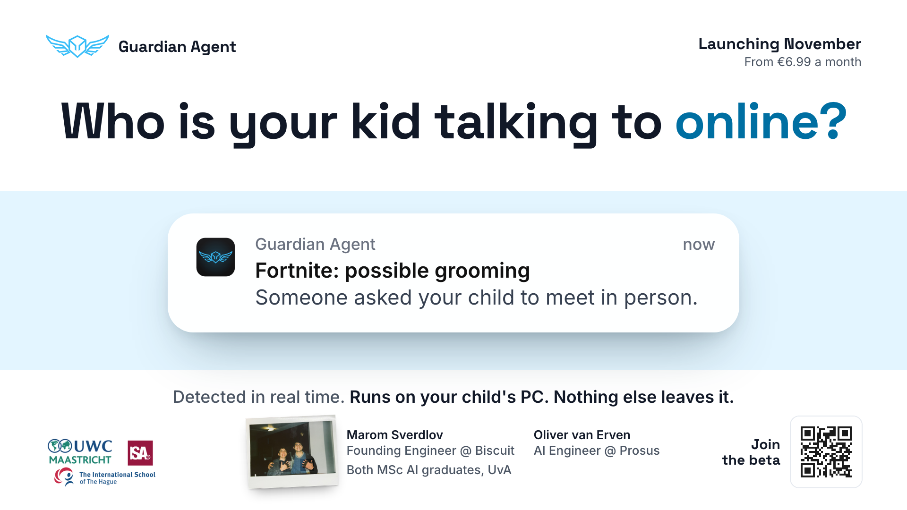
1. The Alert
The parent's notification is the hero. Light, centred, calm.
Full sizeLive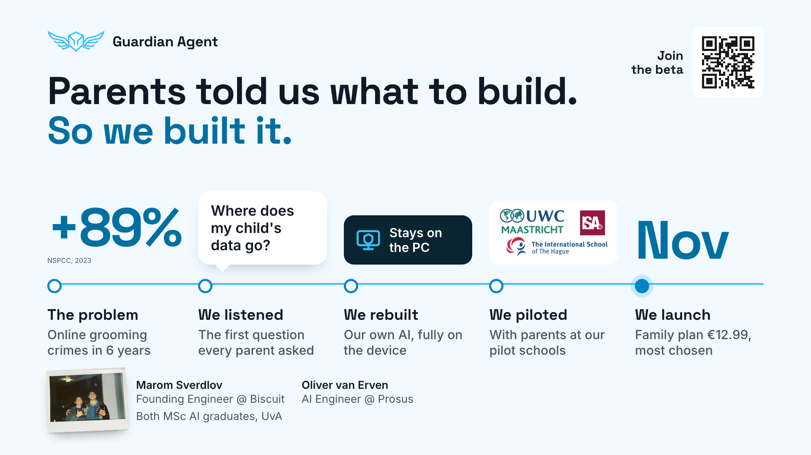
2. The Journey
Our process: problem, listening to parents, privacy rebuild, pilots, launch.
Full sizeLive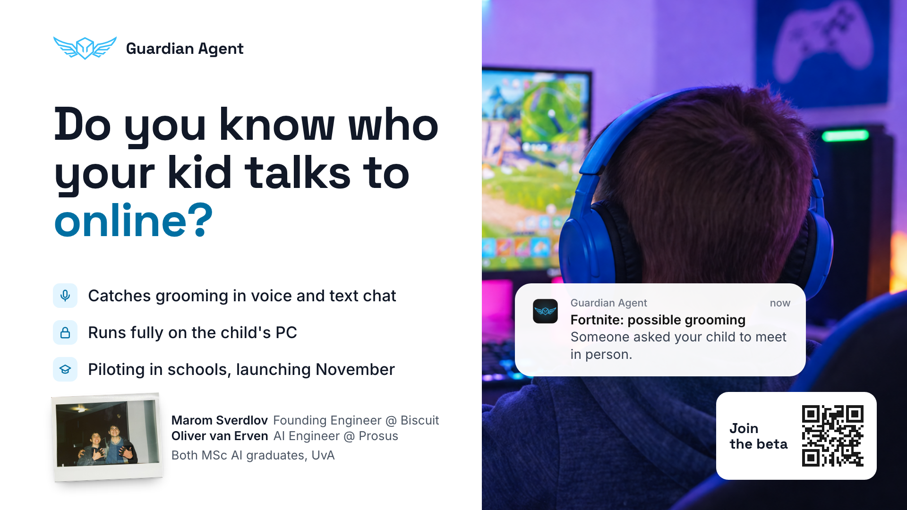
3. Photo
The child at the screen, with the alert landing over the game.
Full sizeLive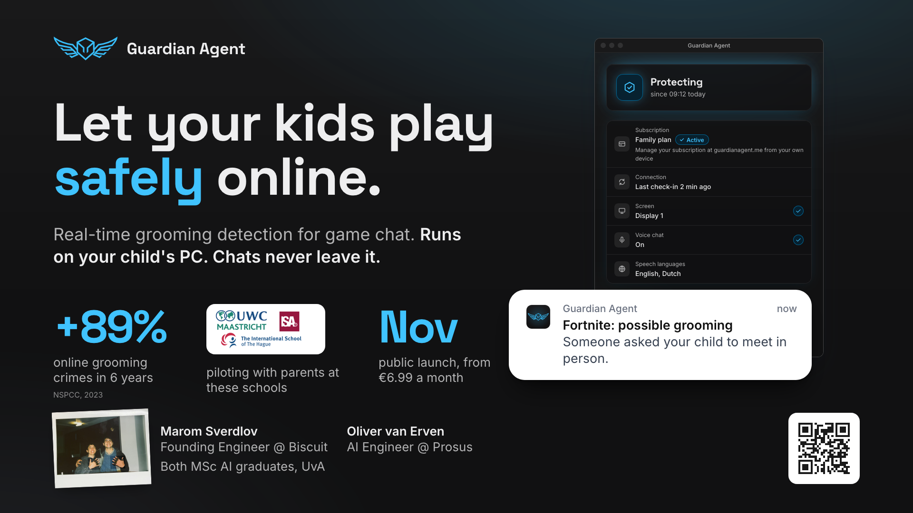
4. Dark
The app's own dark theme, with the real status window.
Full sizeLive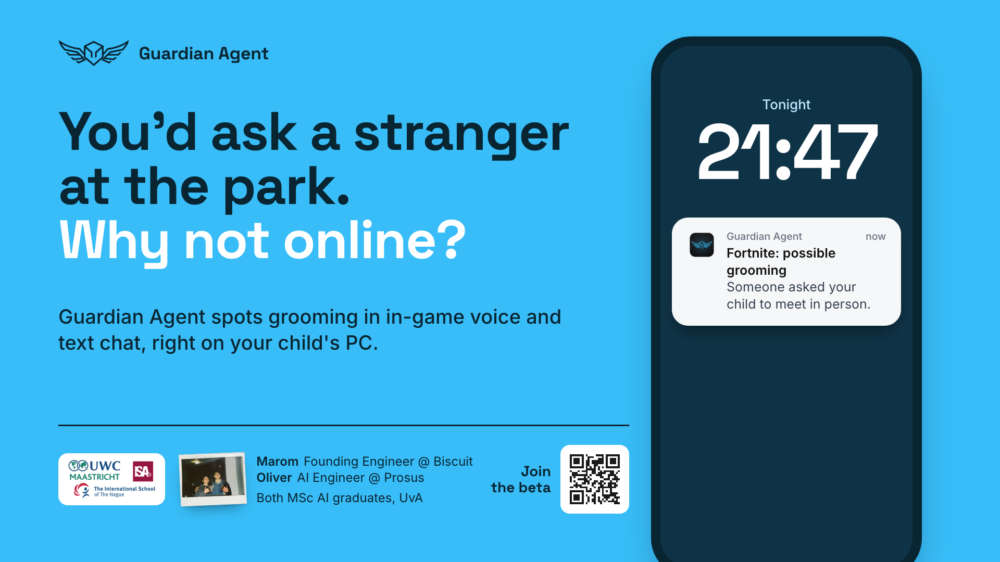
5. Sky
Full brand blue, the park hook, the alert on a phone at night.
Full sizeLive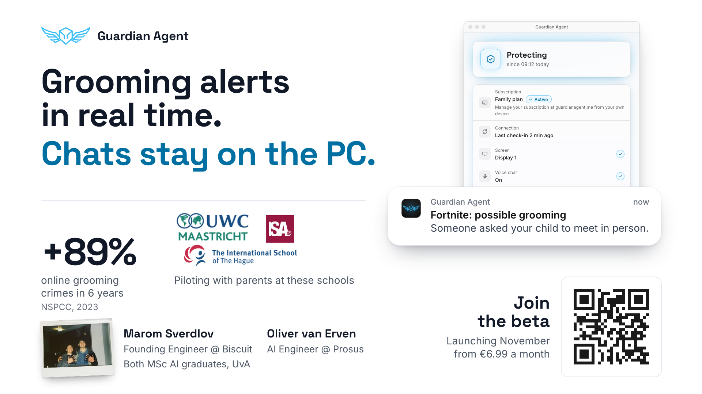
6. Classic
The standard startup slide done properly: claim, product, proof, ask.
Full sizeLiveOption 5, six more takes
Same sky world, new headline: "A world where children can connect and play safely online." Phones and the parent app are illustrative mockups.
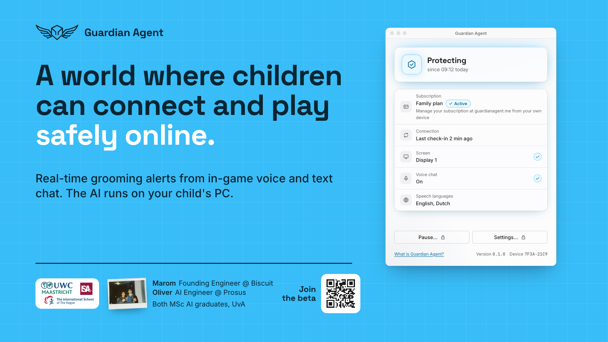
5a. Desktop app
The full desktop app window next to the headline, with schools, team and QR below.
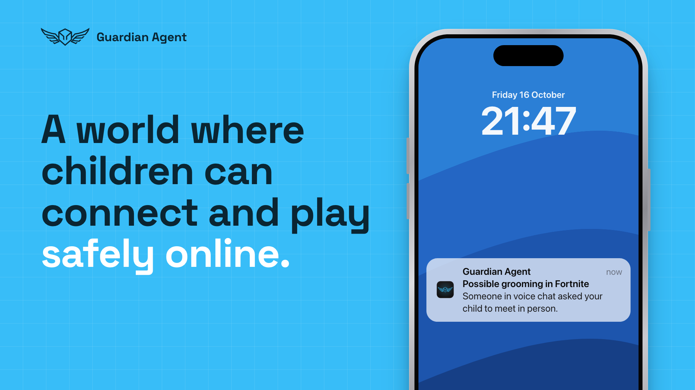
5b. Phone, minimal
A realistic iPhone with a Guardian Agent alert on the lock screen. Nothing else.
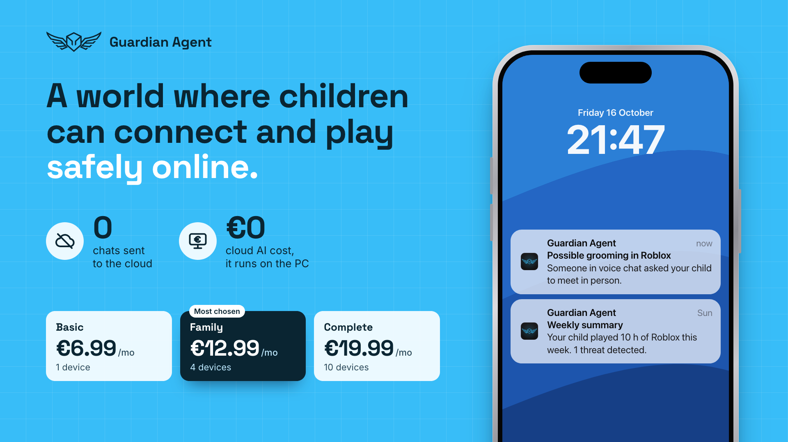
5c. Zero
Two minimal stats (0 chats to the cloud, €0 cloud AI cost), the three plans, and the phone with a live alert plus the weekly summary.
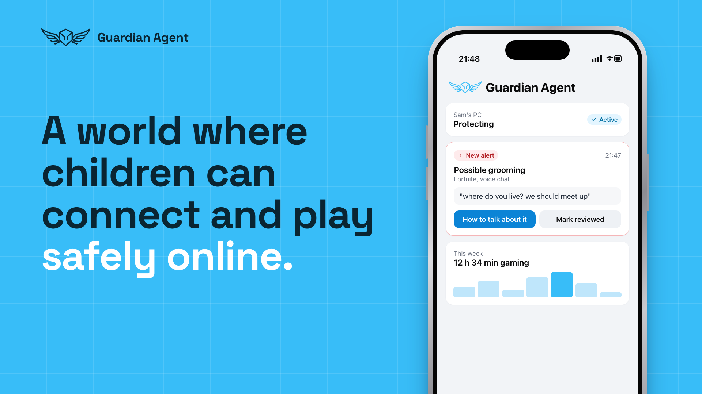
5d. Parent app
The alert as it could look inside a Guardian Agent phone app.
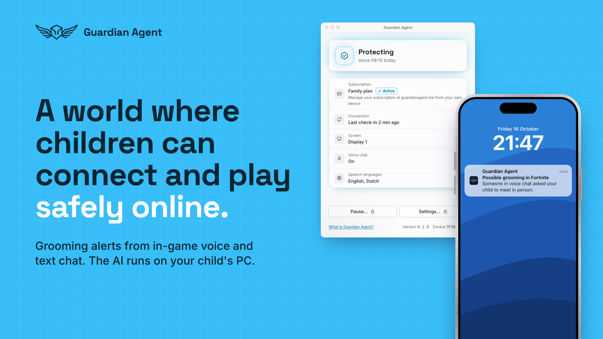
5e. Desktop and phone
The app window on the child's PC and the alert on the parent's phone.
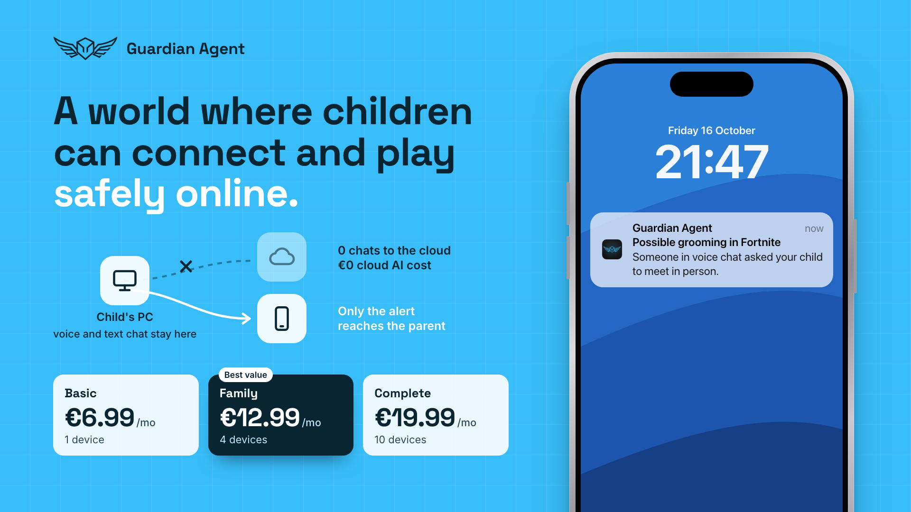
5f. Diagram
A tiny diagram of what stays on the PC and what reaches the parent, plus the plans.